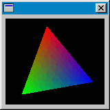

Hilfe
CreateCanvas

Aufruf
Parameter
Rückgabewert
Beschreibung
Beispiel
Siehe auch
canvas = CreateCanvas (x, y, breite, hoehe, gruppe [, style] )
Parameter
| x | Koordinate X |
| y | Koordinate Y |
| breite | Breite der Fläche |
| hoehe | Höhe der Fläche |
| gruppe | Identität einer Gruppe |
| style | 0=Objekt frei skalierbar / 65536=Objekt fixieren |
Rückgabewert
Identität des Canvas-Objekts wird zurückgeliefert
Beschreibung
Die Funktion CreateCanvas erstellt ein Canvas-Objekt. Gebe dazu die Startkoordinate X/Y und Breite/Höhe an. Gruppe ist die Identität von Window, Panel oder Tabber.
Canvas (=Leinwand) ist eine rechteckige Fläche in einem Fenster. Die Grafik kann somit direkt in ein Fenster eingezeichnet werden. Benutze SetBuffer , um die Grafikausgabe auf diese Leinwand umzulenken. Der Befehl FlipCanvas muss ausgeführt werden, damit die Grafik aktualisiert wird.
, um die Grafikausgabe auf diese Leinwand umzulenken. Der Befehl FlipCanvas muss ausgeführt werden, damit die Grafik aktualisiert wird.
Canvas kann für einen Trick verwendet werden. So kann man weitere Gadgets (z.B. Button, Listen usw.) auf Canvas setzten.
Wird ein bildschirmfüllendes Fenster ohne Titelleiste mit CreateWindow erzeugt und es dann komplett mit Canvas-Objekt ausgefüllt, dann lässt sich ein Vollbild-Fenster vortäuschen.
erzeugt und es dann komplett mit Canvas-Objekt ausgefüllt, dann lässt sich ein Vollbild-Fenster vortäuschen.Canvas kann mit SetGadgetShape skaliert werden. Die vorher definierte Größe bleibt jedoch bestehen. Bei Vergrößerung wird bilinearer Filter benutzt und Grafik mit "Antialiasing" gezeichnet!
skaliert werden. Die vorher definierte Größe bleibt jedoch bestehen. Bei Vergrößerung wird bilinearer Filter benutzt und Grafik mit "Antialiasing" gezeichnet!Canvas-Objekt benötigt DirectX, damit es dargestellt werden kann. Darum vermeide es bei simplen Aufgaben (z.B. Bild darstellen). Benutze es für Animationen oder sehr aufwendige Grafiken.

Beispiel
Standardbeispiel:
win = CreateWindow("", 0, 0, 640, 480, 0, 1)
can = CreateCanvas(0, 0, 640, 480, win)
list = CreateListBox(50, 50, 200, 200, can)
AddGadgetItem list, "Eintrag"
AddGadgetItem list, "Test"
AddGadgetItem list, "BlaBla"
SetBuffer CanvasBuffer(can)
Color 255, 0, 0
Rect 500, 50, 200, 200, 1
Repeat
If WaitEvent(1) = $803 Then End
If KeyHit(1) = 1 Then End
Color Rand(255), Rand(255), Rand(255)
Rect Rand(640), Rand(480), Rand(200), Rand(200)
FlipCanvas can
Forever
can = CreateCanvas(0, 0, 640, 480, win)
list = CreateListBox(50, 50, 200, 200, can)
AddGadgetItem list, "Eintrag"
AddGadgetItem list, "Test"
AddGadgetItem list, "BlaBla"
SetBuffer CanvasBuffer(can)
Color 255, 0, 0
Rect 500, 50, 200, 200, 1
Repeat
If WaitEvent(1) = $803 Then End
If KeyHit(1) = 1 Then End
Color Rand(255), Rand(255), Rand(255)
Rect Rand(640), Rand(480), Rand(200), Rand(200)
FlipCanvas can
Forever
Siehe auch